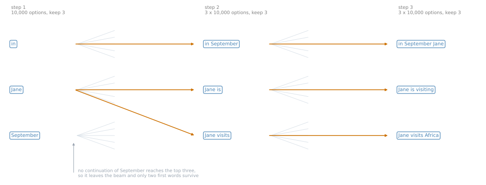
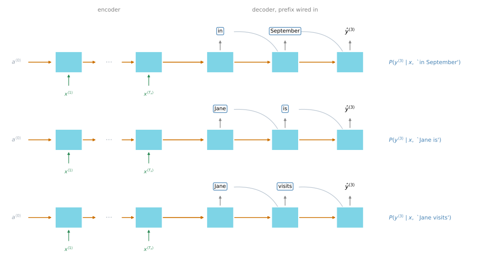
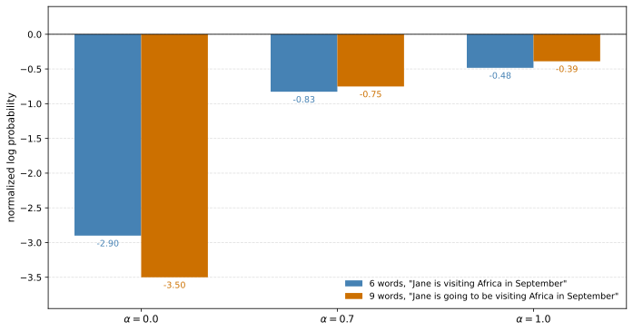
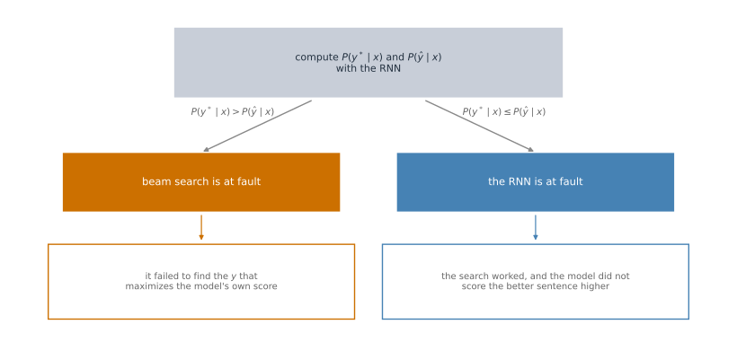
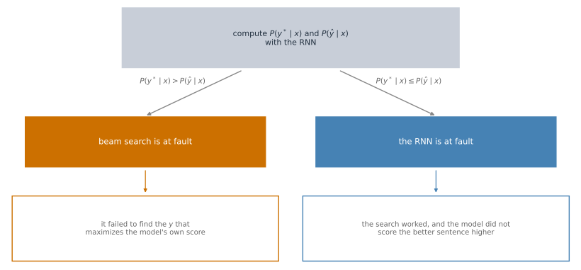

Beam Search
deep-learning
sequence-models
nlp
machine-translation
beam-search
length-normalization
error-analysis
decoding
The approximate search that finds the most likely translation, the log and length-normalization refinements, and how to tell search errors from model errors.
Sequence to Sequence Models left off with a problem. The model gives \(P(y \mid x)\) for any candidate translation, the sentence you want is the one that maximizes it, greedy search does not find it, and the space of candidates is too large to enumerate.
Beam search is the algorithm that resolves this, and it is the one most production translation systems use. The same problem appears in speech recognition, where you want the best transcript of an audio clip rather than a random one, and beam search answers it there too.
Beam Search Algorithm
Beam search has one parameter, the beam width \(B\). Where greedy search keeps the single best option at each step, beam search keeps the best \(B\). The running example uses \(B = 3\) and the sentence Jane visite l'Afrique en septembre, with capitalization ignored to keep things simple.
First Step
Run the French sentence through the encoder, then run one step of the decoder. Its softmax produces \(P(y^{\langle 1 \rangle} \mid x)\) over all 10,000 words in the vocabulary. Greedy search would take the single most likely word. Beam search takes the top three and stores them.
Say those three are in, Jane and September. With a beam width of 10 it would have kept ten instead.
Second Step
For each of those three first words, consider every possible second word.
Take in. Hard-wire \(\hat{y}^{\langle 1 \rangle}\) to in, feed it back into the decoder, and the network fragment now gives \(P(y^{\langle 2 \rangle} \mid x, \text{`in'})\). That is the probability of the second word given the French sentence and given that the first word was in.
What matters is not the most likely second word on its own but the most likely pair. By the chain rule,
\[P(y^{\langle 1 \rangle}, y^{\langle 2 \rangle} \mid x) = P(y^{\langle 1 \rangle} \mid x) \; P(y^{\langle 2 \rangle} \mid x, y^{\langle 1 \rangle})\]
The first factor was saved in step one and the second comes from this fragment, so multiplying them gives the probability of the pair. Do the same with Jane hard-wired, and again with September.
Three first words times 10,000 second words is 30,000 candidate pairs. Evaluate all of them and keep the best three.
Suppose those turn out to be in September, Jane is and Jane visits. Notice what just happened. September has been rejected as a first word entirely, so only two first words survive, while the beam still holds three pairs.
NoteThree copies of the network, not thirty thousand
Because \(B = 3\), every step instantiates three copies of the decoder to evaluate the partial fragments. Each copy produces a softmax over the whole vocabulary in one pass, so three copies cover all 30,000 options. You never instantiate 30,000 networks.
Third Step and Onward
Same again. For in September, hard-wire the first two words and evaluate \(P(y^{\langle 3 \rangle} \mid x, \text{`in September'})\) across the vocabulary. Repeat for Jane is and for Jane visits, take the best three triples, and continue.
On a small screen, scroll horizontally to follow all three steps.
On a small screen, scroll horizontally to inspect all three fragments.

Eventually beam search reaches the end-of-sentence token, and the hope is that it settles on Jane visits Africa in September.
Notice that a beam width of 1 makes this exactly greedy search. Keeping several possibilities instead, three or ten or more, usually finds a much better sentence.
Review Questions
1. At the second step, beam search evaluates 30,000 candidate pairs but instantiates only three copies of the network. Explain both numbers.
Answer
The 30,000 is the beam width times the vocabulary size, three surviving first words each extended by 10,000 possible second words. The three is the number of distinct decoder states, one per surviving prefix. Each copy is run once with its prefix hard-wired, and its softmax output already gives the probability of every one of the 10,000 second words at once. So the fan-out is in the softmax rather than in the number of networks, and one forward pass per prefix covers 10,000 candidates.
1. After step two the beam holds in September, Jane is and Jane visits. How many distinct first words survive, and why is that not a contradiction?
Answer
Two, in and Jane. September was in the beam after step one and no continuation of it made the top three, so it is gone. There is no contradiction because the beam width bounds the number of hypotheses carried forward, not the number of distinct first words. Two of the three surviving hypotheses happen to share a first word. This is the mechanism that lets beam search recover from a bad greedy first choice, and also the mechanism that can lose the right answer if its prefix looks unpromising early.
Refinements to Beam Search
The algorithm as described works. Two changes make it work considerably better.
Take Logs
Beam search maximizes
\[\arg\max_{y} \prod_{t=1}^{T_y} P(y^{\langle t \rangle} \mid x, y^{\langle 1 \rangle}, \ldots, y^{\langle t-1 \rangle})\]
which is just the chain rule written out. Every factor is a probability, so every factor is less than 1, and often much less. Multiplying many of them gives a number too small for a floating point representation to store accurately, which is numerical underflow.
The fix is to maximize the logarithm instead.
\[\arg\max_{y} \sum_{t=1}^{T_y} \log P(y^{\langle t \rangle} \mid x, y^{\langle 1 \rangle}, \ldots, y^{\langle t-1 \rangle})\]
A log of a product is a sum of logs, and because the logarithm is strictly monotonically increasing, whichever \(y\) maximizes the log also maximizes the original product. Same answer, and a numerically stable algorithm that is far less prone to underflow. Most implementations keep the sum of logs rather than the product.

Length Normalization
There is a second problem, and taking logs does not fix it. It makes it easier to see.
A long sentence multiplies together more numbers less than 1, so its probability is lower simply for being long. In the log form, every term is negative, so the more terms you add the more negative the total becomes. Either way the objective has an undesirable bias. It prefers short translations, not because they are better but because they are short.
The fix is to normalize by the number of words, which turns the sum into an average and removes most of the penalty for length.
\[\frac{1}{T_y^{\alpha}} \sum_{t=1}^{T_y} \log P(y^{\langle t \rangle} \mid x, y^{\langle 1 \rangle}, \ldots, y^{\langle t-1 \rangle})\]
The exponent \(\alpha\) is a softer version of the same idea. With \(\alpha = 1\) the objective is fully normalized by length. With \(\alpha = 0\) it is not normalized at all, since \(T_y^0 = 1\). A value such as \(\alpha = 0.7\) sits somewhere in between. It is another hyperparameter to tune.
NoteThis one is a heuristic
There is no great theoretical justification for the \(\alpha\) exponent. People found it works well in practice, so many groups do it. Try different values and see which gives the best result on your data.

Putting It Together
As beam search runs, it produces candidate sentences of length 1, length 2, length 3 and so on. Run it for 30 steps with a beam width of 3 and you have kept the top three hypotheses at each of those lengths.
At the end, score all of those sentences with the normalized log probability objective above and output whichever scores highest. That final score is sometimes called the normalized log likelihood objective.
Choosing the Beam Width
A large beam width considers more possibilities, so it tends to give a better result, but it is slower and uses more memory. A small beam width gives a worse result because fewer possibilities are kept in mind, but it is faster and lighter.
The running example used \(B = 3\), which is on the small side. In production systems a beam width of around 10 is not uncommon. A beam width of 100 would be considered very large for production, depending on the application. Research systems trying to squeeze out every last drop of performance for a paper sometimes use 1,000 or 3,000, though this is very application and domain dependent.
Expect diminishing returns. Going from 1, which is greedy search, to 3 and then to 10 tends to give a large gain. Going from 1,000 to 3,000 usually does not.

NoteRelation to BFS and DFS
Unlike exact search algorithms such as breadth-first search (BFS) or depth-first search (DFS), beam search runs much faster but is not guaranteed to find the exact maximum for
\[\arg\max_{y} P(y \mid x)\]
If you have not met BFS or DFS, nothing on this page depends on them.
Review Questions
1. Why does maximizing the sum of log probabilities give the same answer as maximizing the product?
Answer
Because the logarithm is strictly monotonically increasing. If \(a > b\) then \(\log a > \log b\), so ranking candidates by \(\log P\) produces exactly the same ordering as ranking them by \(P\), and in particular the same maximum. The change is purely numerical. A product of many probabilities underflows a float64 once it drops below about \(10^{-308}\), while the corresponding sum of logs is a moderate negative number that a computer stores without difficulty.
1. Length normalization divides by \(T_y^{\alpha}\). What does the objective reduce to at \(\alpha = 0\) and at \(\alpha = 1\), and why is neither always right?
Answer
At \(\alpha = 0\) the divisor is \(T_y^0 = 1\), so nothing is normalized and the objective is the plain sum of log probabilities, with the length bias left in place. At \(\alpha = 1\) the objective becomes the average log probability per word, which removes the length penalty entirely. That is not obviously right either, because a longer translation genuinely does make more claims and a per-word average can flatter a padded sentence that keeps adding easy, high-probability words. Neither endpoint is principled, which is why \(\alpha\) is tuned as a hyperparameter, often around 0.7.
1. In beam search, if you increase the beam width \(B\), which of these would you expect to be true? Select all that apply.
Beam search will use up more memory
Beam search will converge after fewer steps
Beam search will generally find better solutions, meaning it does a better job maximizing \(P(y \mid x)\)
Beam search will run more slowly
Answer
a, c and d. A larger \(B\) keeps more candidate sentences alive at every step, so more must be held in memory and more must be scored, which is a and d. Keeping more candidates also means fewer good prefixes get pruned early, so the search comes closer to the true maximum of \(P(y \mid x)\), which is c.
Option b confuses the width of the search with its length. The number of steps is set by how long the output sentence is, not by how many candidates are carried at each step, so widening the beam does not shorten the run. Every one of these is a cost or benefit of the same change, which is why \(B\) is a trade-off rather than something to set as high as possible.
1. True or false. In machine translation, if you carry out beam search without using sentence normalization, the algorithm will tend to output overly long translations.
Answer
False. It tends to output overly short translations. Extending a candidate multiplies in another probability less than one, so all else being equal a longer sentence scores lower, and the sum of logs grows more negative with every word added. That does not order any two arbitrary sentences, since a long sentence of confident words can still outscore a short sentence of unlikely ones, but it does mean the unnormalized objective carries a structural pull toward stopping early. Dividing by \(T_y^{\alpha}\) is what offsets it.
Error Analysis on Beam Search
Beam search is approximate, so it does not always output the most likely sentence. When a translation comes out wrong, the fault could lie with beam search or with the RNN model itself, and it matters which, because the fixes are completely different.
Increasing the beam width is tempting the way collecting more training data is tempting. It rarely hurts. But like more data, it may not get you where you want to go, and the way to decide whether it is a good use of your time is to measure.
Attributing a Single Error
Take an example from the development set. The French sentence is Jane visite l'Afrique en septembre. A human produced
\[y^* = \text{`Jane visits Africa in September'}\]
and the system produced
\[\hat{y} = \text{`Jane visited Africa last September'}\]
which is a much worse translation, and one that changes the meaning.
The system has two components. The RNN, meaning the encoder and decoder together, computes \(P(y \mid x)\). Beam search runs on top of it with some beam width \(B\) and tries to find the \(y\) that maximizes that. So use the RNN to compute both \(P(y^* \mid x)\) and \(P(\hat{y} \mid x)\), then compare.
Scoring a sentence the system never produced takes no search at all. Plug the sentence in. Run the decoder one step at a time exactly as in the figure above, but instead of letting it pick a word, force each step to take the next word of the sentence being scored, and read off the probability the softmax assigned to that word. The chain rule turns those per-word numbers into the probability of the whole sentence.
\[P(y \mid x) = \prod_{t=1}^{T_y} P(y^{\langle t \rangle} \mid x, y^{\langle 1 \rangle}, \ldots, y^{\langle t-1 \rangle})\]
Feed in Jane visits Africa in September and that product is \(P(y^* \mid x)\). Feed in Jane visited Africa last September and it is \(P(\hat{y} \mid x)\). Both come from the same network, and neither requires beam search to have found anything.
Case 1, \(P(y^* \mid x) > P(\hat{y} \mid x)\). Beam search chose \(\hat{y}\). Its one job was to find the \(y\) that maximizes \(P(y \mid x)\), and \(y^*\) attains a higher value than the \(\hat{y}\) it returned. So beam search failed at its job. Beam search is at fault.
Case 2, \(P(y^* \mid x) \leq P(\hat{y} \mid x)\). Here \(y^*\) is the better translation, and the RNN does not score it above the inferior \(\hat{y}\). Beam search did what it was asked, and returned a sentence the model rates at least as highly as the better one. The model told it the wrong thing. The RNN is at fault.
One of the two cases must hold, so every error gets attributed.

NoteOne subtlety being glossed over
If you are using length normalization, you should compare the normalized objective rather than the raw probabilities, since that normalized objective is what beam search is actually maximizing. Comparing raw \(P(y \mid x)\) when the search optimizes something else would misattribute errors that come from the normalization itself.
Doing It Across the Development Set
The process scales to a table. Go through the development set, find the examples where the algorithm produced a much worse output than the human translation, and for each one compute both probabilities and record which component was at fault.
| Human translation \(y^*\) | System output \(\hat{y}\) | \(P(y^* \mid x)\) | \(P(\hat{y} \mid x)\) | At fault |
|---|---|---|---|---|
| Jane visits Africa in September | Jane visited Africa last September | \(2 \times 10^{-10}\) | \(1 \times 10^{-10}\) | B |
| … | … | … | … | R |
| … | … | … | … | B |
In the first row, beam search chose the output with the lower probability, so beam search is at fault and the row is marked B. Work down the list marking B or R, and the fraction of errors in each column tells you where the problem is.
Only if beam search is responsible for a large share of the errors is it worth working hard to increase the beam width. If the RNN is at fault, that calls for a different investigation entirely, into regularization, more training data, a different architecture, or something else.
This process generalizes. It is useful whenever an approximate optimization algorithm is working to optimize an objective produced by a learning algorithm, because it separates a failure of the search from a failure of the thing being searched.
NoteWhat You Should Remember
- Beam search keeps the best \(B\) hypotheses at every step rather than the single best, and \(B = 1\) is greedy search.
- Each step evaluates \(B\) times the vocabulary size in candidates, using only \(B\) forward passes.
- Maximize the sum of log probabilities rather than the product, to avoid numerical underflow.
- Divide by \(T_y^{\alpha}\) so the objective stops preferring short translations, with \(\alpha\) tuned as a hyperparameter.
- Beam search is approximate and gives no guarantee of finding the maximum, unlike an exact search such as breadth-first search.
- When a translation is wrong, compare \(P(y^* \mid x)\) against \(P(\hat{y} \mid x)\) to decide whether the search or the model is at fault.
Review Questions
1. A speech recognition system maps an audio clip \(x\) to a transcript \(y\), using beam search to find the \(y\) that maximizes \(P(y \mid x)\). On a dev set example it outputs \(\hat{y} =\) “I am building an A Eye system in Silly con Valley.”, while a human gives the far better \(y^{*} =\) “I am building an AI system in Silicon Valley.” The model scores them at \(P(\hat{y} \mid x) = 1.09 \times 10^{-7}\) and \(P(y^{*} \mid x) = 7.21 \times 10^{-8}\). Would you expect increasing the beam width \(B\) to correct this example?
No, because \(P(y^{*} \mid x) \leq P(\hat{y} \mid x)\) indicates the error should be attributed to the RNN rather than to the search algorithm
Yes, because \(P(y^{*} \mid x) \leq P(\hat{y} \mid x)\) indicates the error should be attributed to the RNN rather than to the search algorithm
No, because \(P(y^{*} \mid x) \leq P(\hat{y} \mid x)\) indicates the error should be attributed to the search algorithm rather than to the RNN
Yes, because \(P(y^{*} \mid x) \leq P(\hat{y} \mid x)\) indicates the error should be attributed to the search algorithm rather than to the RNN
Answer
a. Compare the two numbers first. \(7.21 \times 10^{-8}\) is smaller than \(1.09 \times 10^{-7}\), so \(P(y^{*} \mid x) \leq P(\hat{y} \mid x)\). Of these two candidates, the model ranks the worse one higher, and beam search returned the one the model preferred. So this error is not evidence that the search fell short, and it is evidence that the model misranks the pair, which puts the RNN at fault and eliminates c and d.
That in turn answers the question asked. A wider beam searches harder for whatever the model scores highest, and here the model scores the wrong sentence above the right one, so widening \(B\) would not be expected to recover \(y^{*}\). That eliminates b, which draws the right attribution and then the wrong conclusion from it.
1. Why is it not enough to just increase the beam width whenever translations look bad?
Answer
Because a wider beam only helps with one of the two failure modes. It makes the search better at finding the sentence the model scores highest, which fixes case 1 errors and does nothing for case 2 errors. If most of your errors are the model preferring worse sentences, a wider beam buys you slower, more expensive decoding and roughly the same translations. The error analysis exists precisely to tell you which situation you are in before spending the effort, in the same way that collecting more training data is tempting, rarely harmful, and often not the bottleneck.
1. If you use length normalization, what should you actually compare during error analysis, and why?
Answer
The normalized objective, \(\frac{1}{T_y^{\alpha}} \sum_t \log P(y^{\langle t \rangle} \mid x, y^{\langle 1 \rangle}, \ldots, y^{\langle t-1 \rangle})\), rather than the raw \(P(y \mid x)\). The attribution logic rests on asking whether beam search found the maximum of the thing it was optimizing. If the search optimizes the normalized score and you compare raw probabilities, the two can disagree, and errors caused by the choice of \(\alpha\) would get blamed on the model. Since \(y^*\) and \(\hat{y}\) frequently differ in length, that mismatch is likely rather than rare.
1. True or false. After a few more weeks of work you find that for the vast majority of examples where your algorithm makes a mistake, \(P(y^{*} \mid x) > P(\hat{y} \mid x)\). This suggests you should not focus your attention on improving the search algorithm.
Answer
False. It suggests the opposite. \(P(y^{*} \mid x) > P(\hat{y} \mid x)\) means the model already scores the human translation higher than the one that was returned, so the better sentence was there to be found and beam search failed to find it. That is a search failure, and search is exactly where the effort should go. If the vast majority of mistakes look like this, widening the beam is likely to pay off.